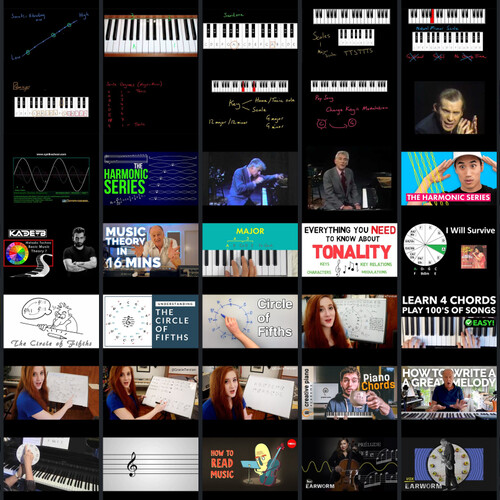

#63: The Music Theorist
Sunday, February 14th 2021, 8:11:01 pm


What is a key? (Witness a chord at play, very primitive melody or progression but multiple keys are pressed)

What is a key? (Witness a chord at play, very primitive melody or progression but multiple keys are pressed)
Play Video
Glenn Gould - How Mozart Became a Bad Composer

Glenn Gould - How Mozart Became a Bad Composer
Play Video


Intro To The Harmonic Series - TWO MINUTE MUSIC THEORY

Intro To The Harmonic Series - TWO MINUTE MUSIC THEORY
Play VideoBernstein, The greatest 5 min. in music education

Bernstein, The greatest 5 min. in music education
Play Video
The most mind-blowing concept in music (Harmonic Series)

The most mind-blowing concept in music (Harmonic Series)
Play Video


Circle of Fifths, Everything You Need to Know

Circle of Fifths, Everything You Need to Know
Play Video8 Facts About the Circle of Fifths that you May Not Already Know

8 Facts About the Circle of Fifths that you May Not Already Know
Play VideoThe Circle of Fifths made clear (incl. Transposition)

The Circle of Fifths made clear (incl. Transposition)
Play VideoMusic Theory - Understanding The Circle of Fifths

Music Theory - Understanding The Circle of Fifths
Play VideoThe Circle of Fifths - How to Actually Use It

The Circle of Fifths - How to Actually Use It
Play VideoCircle of 5ths, Easiest Way to Memorize and Understand It

Circle of 5ths, Easiest Way to Memorize and Understand It
Play VideoLearn 4 Chords - Quickly Play Hundreds of Songs!

Learn 4 Chords - Quickly Play Hundreds of Songs!
Play Video5 Useful EDM Chord Patterns (that changed my life)

5 Useful EDM Chord Patterns (that changed my life)
Play VideoEDM Chord Progression Patterns - Top 5 Rhythms

EDM Chord Progression Patterns - Top 5 Rhythms
Play VideoEasy Chord Theory - Diatonic Chords of Major Keys

Easy Chord Theory - Diatonic Chords of Major Keys
Play Video
Relative Minor Keys - 3 Easy Ways to Find Them

Relative Minor Keys - 3 Easy Ways to Find Them
Play VideoPIANO CHORDS, The ULTIMATE Step-by-Step Guide For Beginners

PIANO CHORDS, The ULTIMATE Step-by-Step Guide For Beginners
Play Video


Complete Piano Theory Course, Chords, Intervals, Scales & More!

Complete Piano Theory Course, Chords, Intervals, Scales & More!
Play Video

References
- 1. What is Music Theory? (www.youtube.com)
- 2. Pitch and Octaves (www.youtube.com)
- 3. The 12 Pitches (www.youtube.com)
- 4. Tones and Semitones (www.youtube.com)
- 5. Scales, The Major Scale (www.youtube.com)
- 6. Scales, The (Natural) Minor Scale (www.youtube.com)
- 7. Scales, The (Harmonic) Minor Scale (www.youtube.com)
- 8. Scales, The (Melodic) Minor Scale (www.youtube.com)
- 9. Scale Degrees (Explains Tonic) (www.youtube.com)
- 10. Scale Degree Names (and a strange mnemonic) (www.youtube.com)
- 11. What is a key? (Witness a chord at play, very primitive melody or progression but multiple keys are pressed) (www.youtube.com)
- 12. Changing Key / Modulation (www.youtube.com)
- 13. Glenn Gould - How Mozart Became a Bad Composer (www.youtube.com)
- 14. How Did Beethoven Hear Music? (www.youtube.com)
- 15. Herbie Hancock on Music Theory (www.youtube.com)
- 16. Overtones, harmonics and Additive synthesis (www.youtube.com)
- 17. Intro To The Harmonic Series - TWO MINUTE MUSIC THEORY (www.youtube.com)
- 18. Bernstein, The greatest 5 min. in music education (www.youtube.com)
- 19. Harmonic Series - Explained (www.youtube.com)
- 20. The most mind-blowing concept in music (Harmonic Series) (www.youtube.com)
- 21. 9. The Overtone Series and Timbre (www.youtube.com)
- 22. An Introduction to Overtones and Harmonics (www.youtube.com)
- 23. Melodic Techno Basic Music Theory Tutorial (www.youtube.com)
- 24. Music Theory in 16 Minutes (www.youtube.com)
- 25. Learn music theory in half an hour. (www.youtube.com)
- 26. How to Listen to Classical Music, Tonality (www.youtube.com)
- 27. Circle of 5th in Songs You Know (www.youtube.com)
- 28. Circle of Fifths, Everything You Need to Know (www.youtube.com)
- 29. 8 Facts About the Circle of Fifths that you May Not Already Know (www.youtube.com)
- 30. The Circle of Fifths made clear (incl. Transposition) (www.youtube.com)
- 31. Music Theory - Understanding The Circle of Fifths (www.youtube.com)
- 32. The Circle of Fifths - How to Actually Use It (www.youtube.com)
- 33. Circle of 5ths, Easiest Way to Memorize and Understand It (www.youtube.com)
- 34. Learn 4 Chords - Quickly Play Hundreds of Songs! (www.youtube.com)
- 35. 5 Useful EDM Chord Patterns (that changed my life) (www.youtube.com)
- 36. EDM Chord Progression Patterns - Top 5 Rhythms (www.youtube.com)
- 37. Easy Chord Theory - Diatonic Chords of Major Keys (www.youtube.com)
- 38. Easy Chord Theory - Triads and Intervals (www.youtube.com)
- 39. Relative Minor Keys - 3 Easy Ways to Find Them (www.youtube.com)
- 40. PIANO CHORDS, The ULTIMATE Step-by-Step Guide For Beginners (www.youtube.com)
- 41. How to write a GREAT melody (www.youtube.com)
- 42. 3 Tricks to Better Melodies Everytime (www.youtube.com)
- 43. Playing Music With No Music - Lesson 1 (www.youtube.com)
- 44. Playing Music With No Music - Lesson 2 (www.youtube.com)
- 45. How to Read Sheet Music (www.youtube.com)
- 46. How to read music - Tim Hansen (www.youtube.com)
- 47. That famous cello prelude, deconstructed (www.youtube.com)
- 48. The most feared song in jazz, explained (www.youtube.com)
- 49. Complete Piano Theory Course, Chords, Intervals, Scales & More! (www.youtube.com)